A focused collection of projects where strategy meets craft.
Scroll
01
AI Research · Accessibility · Mixed Reality · Human-Computer Interaction
Inclusive Futures in AI & Mixed Reality
Two research projects at Microsoft Research Cambridge: defining ethical foundations for inclusive avatars in spatial computing, and co-designing human-AI interaction for Blind and Low-Vision users — contributing to the Seeing AI ecosystem.
Designing AI-enabled future experience for 2030—speculative design and strategic storytelling to shape Commercial Banking's customer vision and guide executive strategy.
AI Product DesignSpeculative DesignNarrative StrategyFutures Thinking
View case study →
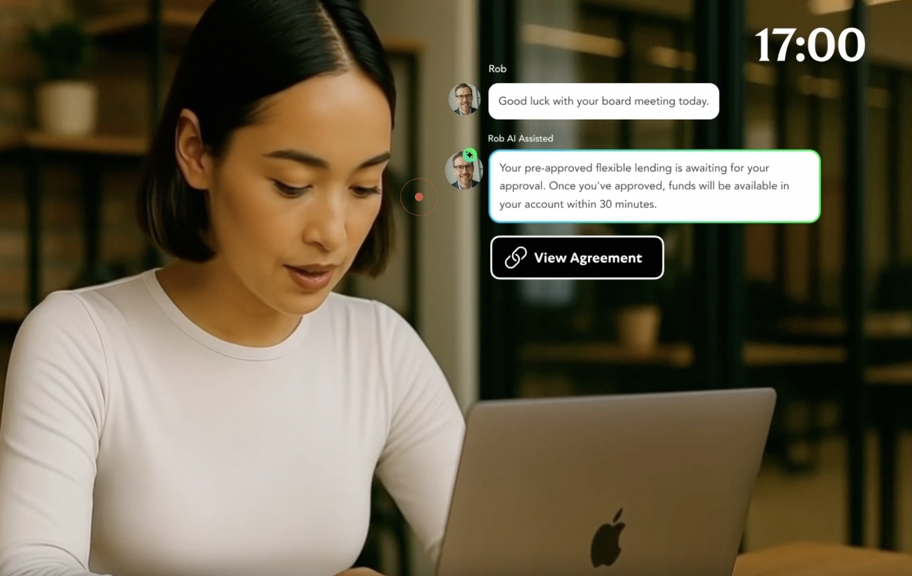
03
Speculative Design · Spatial Interaction · Community Resilience
<unspace> — Audio-spatial platform for community memory
A physical-digital platform preserving and sharing community stories through sensory, audio-spatial experiences — developed with Hackney Wick residents facing rapid gentrification.
Spatial InteractionParticipatory DesignSpeculative DesignCommunity Research
A virtual reality memory-scape using dust as a metaphor for our relationship with the planet and each other — collecting stories from 28 individuals to create an immersive, navigable world of audio memories. The seed project of <unspace>.
Commercial Banking · Enterprise Platform · Service Design
FX Risk Management Platform
A platform designed for scaling businesses to transform accounting data into actionable insight—enabling smarter FX decisions, clearer risk management, and confident cash flow control.
Service Design · Everyday Banking · Financial Inclusion
PayPoint Cash Deposit
Enabling customers to deposit cash at local shops through PayPoint—designing an inclusive service that maintains banking access for vulnerable customers while supporting branch closure strategy.
Redesigning the telephony sales and onboarding journey for business customers—reducing call duration by 50% while improving conversational flow and colleague confidence.
Automotive · Strategic Research · Human-Centred Design
Ford Motor Company — Future of Truck
Redefining archetypes for Ford's best-selling F-series trucks by uncovering overlooked customer segments and translating deep user research into strategic product roadmaps for 2035 and beyond.
Designing at the intersection of strategy, discovery, and emerging technology.
I'm a product designer with a deep focus on the problem space—understanding systems, stakeholders, and the nuances of human behaviour before a single pixel is placed.
My approach is rooted in cross-functional collaboration. I bridge the gap between leadership vision and engineering reality, ensuring design has a seat at the table from day one.
Currently open to senior and lead opportunities where I can drive product strategy, mentor teams, and shape AI-enabled experiences.
Interaction Designer & Interactive Media Researcher
Interactive Architecture Lab, The Bartlett, UCL · London, UK
2019–2020
Interaction Designer
Ford Motor Company · Detroit, MI, USA
2017–2019
Co-founder, Creative Director
Fren · Savannah, GA, USA
2011–2014
Visual Designer
Freelance · Seoul, Korea
/ FX Risk Management Platform
FX Risk Management Platform
A platform designed for scaling businesses to transform accounting data into actionable insight—enabling smarter FX decisions, clearer risk management, and confident cash flow control.
2023–2024
Client
Lloyds Banking Group
Role
Service Designer
Collaboration
Commercial Banking, Markets, Client Data & Analytics
I served as the central experience design orchestrator across a complex, multi-team delivery environment—governing quality, aligning third-party design delivery, facilitating sign-off, managing end-to-end journeys, and enabling stakeholder feedback across Commercial Banking, Markets, Client Data & Analytics, and a third-party partner (CoBa).
This wasn't a traditional product design role. It required designing the operating model itself: how teams would collaborate, how quality would be maintained, and how client value would be measured beyond just feature launches.
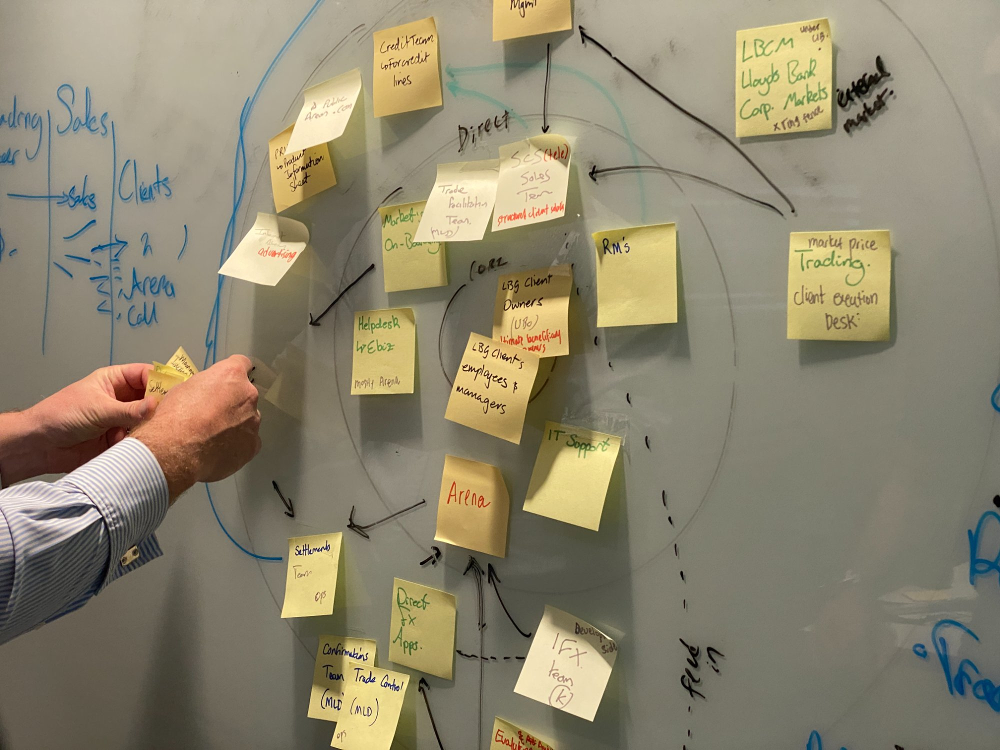
Stakeholder ecosystem mapping workshop — identifying all actors across Commercial Banking, Markets, and Partnerships to establish the operating model.
The problem
Commercial Banking clients were executing 63% of their FX transactions with competitors—revealing major leakage and unmet needs in Lloyds' FX experience. Clients wanted a simple, digital way to view exposures, ingest accounting data, and hedge FX risk without relying on telephony.
63%
of FX transactions executed with competitors
Experience goals (based on user research)
💡
Create a simple, intuitive digital platform for FX exposure visibility and decision making
📊
Enable SME clients to self-manage FX exposure more frequently based on live data insights
⚡
Enable colleagues to spend less time on simple FX queries and more time supporting strategic decisions
The challenge
Delivering a third-party FX platform within Lloyds' Experience Standards required more than integration—it demanded alignment across brand, accessibility, and contractual touchpoints.
We needed to ensure the partner experience felt seamless and native to Lloyds, while identifying and removing friction across the most critical journeys: onboarding, data integration, user management, and FX booking flows.
Key delivery challenges
Fragmented delivery environment: Multiple teams operating on different timelines, with critical roles like solution architect and E2E testing manager initially missing—creating ambiguity and slowing alignment.
Complex data ingestion journeys: Data flows between CD&A, Markets, and the third-party platform needed mapping, risk assessment, and translation into implementable UX.
Third-party experience quality: Ensuring the partner's delivery met Lloyds' brand guidelines, accessibility standards, and experience quality expectations.
End-to-end journey friction: The overall service journey had numerous handoffs across onboarding, consent, data integration, FX booking, and user management.
Experience debt: No established measurement framework meant the business was absorbing friction through front-line telephone and email — effective, but unsustainable. The goal was to reduce that load while preserving the human rapport.
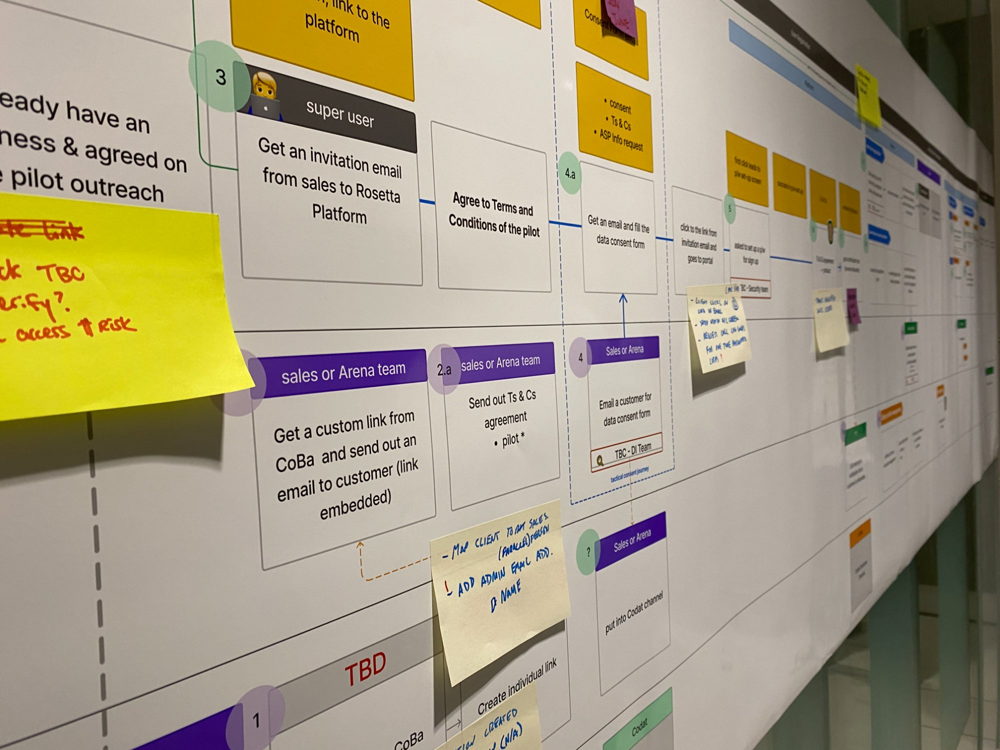
As-is service journey mapping — documenting existing onboarding, consent, and FX booking flows across all touchpoints to surface friction points before redesign.
My approach
I tackled these challenges through a combination of strategic orchestration, hands-on journey design, and operational rigor.
Established the experience operating model
Introduced a design-led operating model with weekly design governance, structured feedback loops, and a shared view of dependencies across teams. This created the alignment infrastructure that was previously missing.
Mapped complex data flows into sharable artefacts
Worked directly with Client Data & Analytics and Markets to map data flows, risks, and gaps—then translated these into service flows and UX artefacts that non-technical stakeholders could understand and act on.
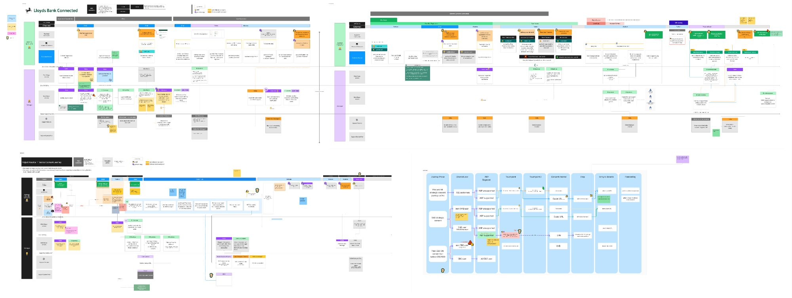
End-to-end service journey map — charting client and colleague flows across onboarding, data integration, FX booking, and user management, shared across four workstreams.
Governed third-party design quality
Ran weekly design reviews with the third-party partner, providing actionable feedback against Lloyds' brand guidelines and UX quality standards before each release. This wasn't gatekeeping—it was coaching the partner team toward native-feeling experiences.
Identified and prioritised journey friction
Conducted end-to-end journey assessments across onboarding, data integration, consent, FX booking, and user management. Documented friction points and fed improvement opportunities directly into product and engineering backlogs.
Reframed success measurement
Applied internal Design Excellence assessments and DAC accessibility reviews to establish a shared understanding of experience success—shifting the conversation from "did we launch?" to "did we create client value?"
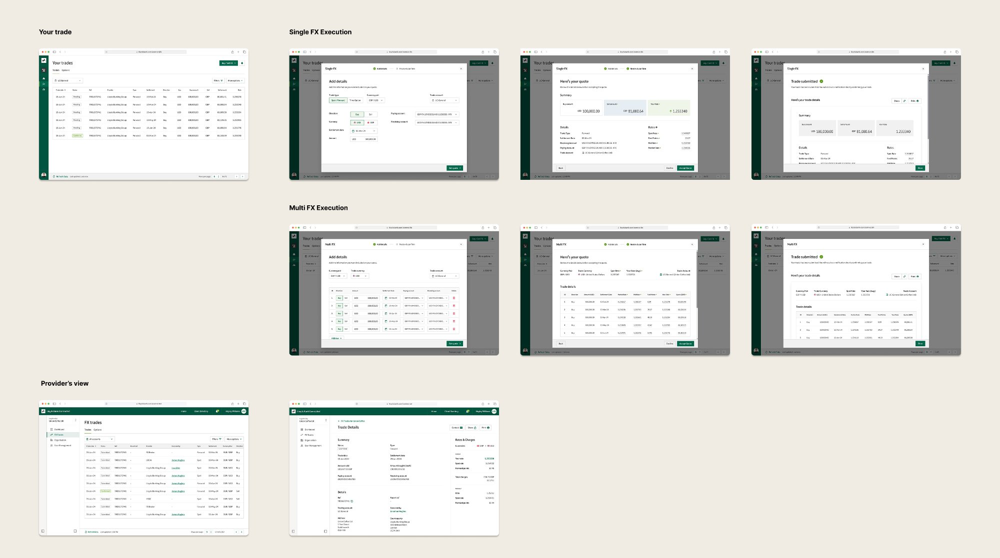
Early wireframe explorations — iterative screen designs for the FX booking flows, tested with clients before partner handoff for build.
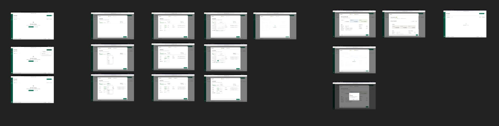
Single & Multi FX execution flows — final screen sequences covering trade entry, quote review, and confirmation for both individual and bulk FX transactions.
My impact
Key contributions
✓ Established the experience operating model between Lloyds Banking Group and third-party partner (CoBa)
✓ Defined end-to-end client and colleague journeys, shared across workstreams to support alignment and delivery
✓ Ran weekly design governance sessions, identifying risks and driving continuous journey improvements
✓ Established success-measurement approach using Design Excellence assessments and DAC accessibility reviews
This project demonstrated that great service design isn't just about crafting individual touchpoints—it's about designing the collaboration model, quality standards, and measurement frameworks that enable teams to deliver coherent, valuable experiences at scale.
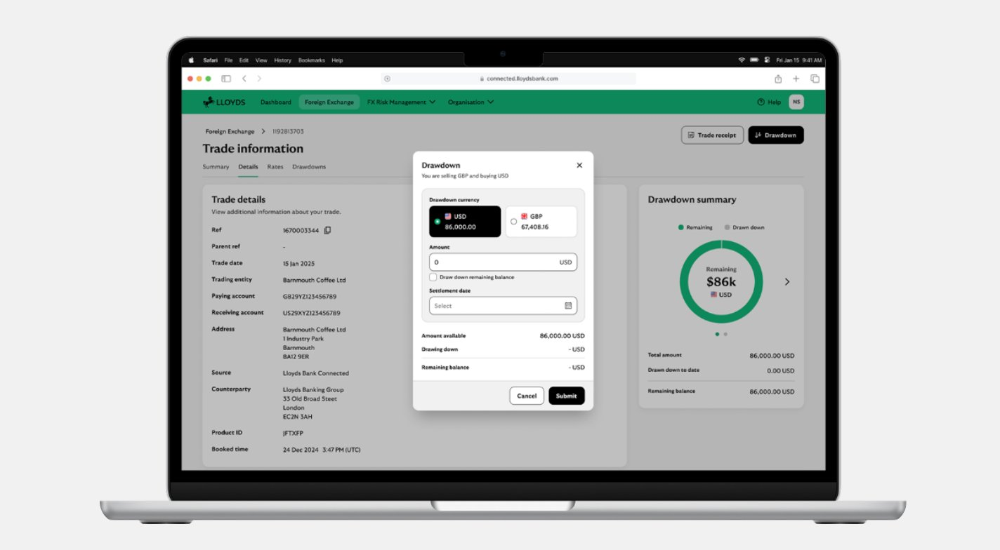
The delivered platform — FX Risk Management dashboard showing trade information, drawdown flow, and live rate monitoring across desktop and mobile. Live on Lloyds Bank Connected.
"The hardest design challenge wasn't the platform itself—it was designing how distributed teams would collaborate to deliver it."
What I learned
Service design at enterprise scale requires equal parts craft and orchestration. The most valuable design contribution wasn't a specific screen or flow—it was establishing the operating rhythm that allowed multiple teams to stay aligned, maintain quality, and measure what actually mattered.
What I'd do differently
Stay focused within your area of speciality to keep delivery productive and efficient — but invest early in finding the right rhythm for cross-stakeholder alignment.
Regular check-ins with large stakeholder groups aren't overhead; they're the mechanism that prevents misalignment from compounding. The earlier you establish how the group will stay in sync, the less time you spend course-correcting later.
Next Project
Future Experience Vision for Banking
Designing AI-enabled future experience for 2030—speculative design and strategic storytelling.
/ Future Experience Vision for Banking
Future Experience Vision for Banking
Designing AI-enabled future experience for 2030—speculative design and strategic storytelling to shape Commercial Banking's customer vision and guide executive strategy.
Operating as an in-house design agency, the team ran 3-week sprints across different business areas — each one producing a future experience vision to align leaders and seed downstream product thinking.
Topics varied widely depending on the brief, spanning retail and business banking moments such as home buying, shopping experiences, and growing a business in future contexts.
The goal
Create a future-facing 2030 experience vision that would align teams across Commercial, Data, AI, Design, and Product on a single narrative.
🤖
Demonstrate how AI can make business financial management automated, proactive, and seamless
🎯
Show a realistic but aspirational view of the customer journey for 2030
🎬
Produce a conceptual video + strategic deck suitable for ExCo-level provocation and ideation
Design principles established
The vision was anchored around five foundational principles: contextual, conversational, proactive, composable, and invisible—ensuring AI feels natural rather than intrusive.
My role
As Product Designer on the Design Futures team, I played a role of a core narrative, UX, and concept-definition lead for the entire vision sprint.
Core responsibilities
✓ Created and maintained Figma/FigJam spaces for immersion, ideation, and storyboard development
✓ Crafted and iterated the storyline and future customer scenario
✓ Led feedback integration from Design Leads, researchers, and stakeholders
✓ Facilitated alignment sessions and clarified narrative or product logic for contributors
✓ Pinpointed future banking moments and AI-supported tasks to strengthen provocation
Process
Immersion & foundational setup
Established the vision immersion board and facilitated workshops to align the team around core research, early design principles, and the target persona.
Cross-team concepting
Collaborated with Experience Design and Applied Science to define barriers to business growth and identify high-value "AI-intervention" points in the customer lifecycle.
Storyboarding & narrative design
Facilitated cross-departmental synthesis through iterative storyboarding to align diverse future strategies into a single narrative anchored by strategic touchpoints.
Business customer sprint storyboard — illustrating the BCB 2030 vision narrative across key moments in Hannah's day as an SME Finance Director. Contents intentionally blurred to protect confidential internal materials.
"The narrative had to feel human-centered while showcasing technical possibility—bridging aspiration with feasibility."
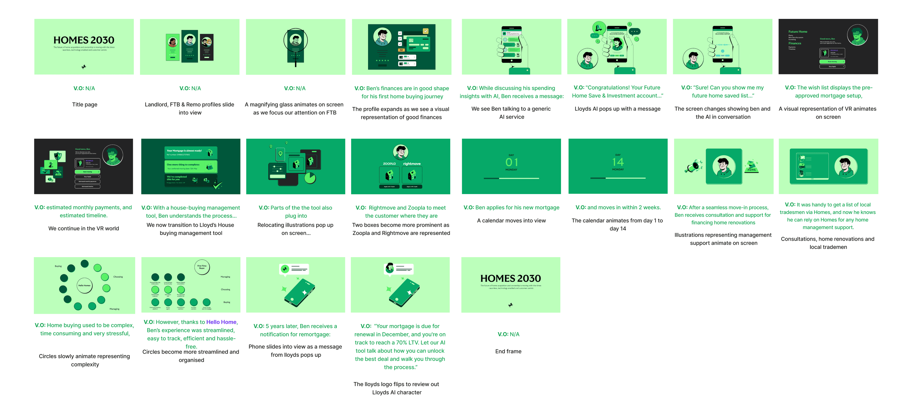
Homes 2030 storyboard — frame-by-frame narrative design for the Lloyds Homes vision video, following Ben's first home buying journey through an AI-enabled mortgage experience.
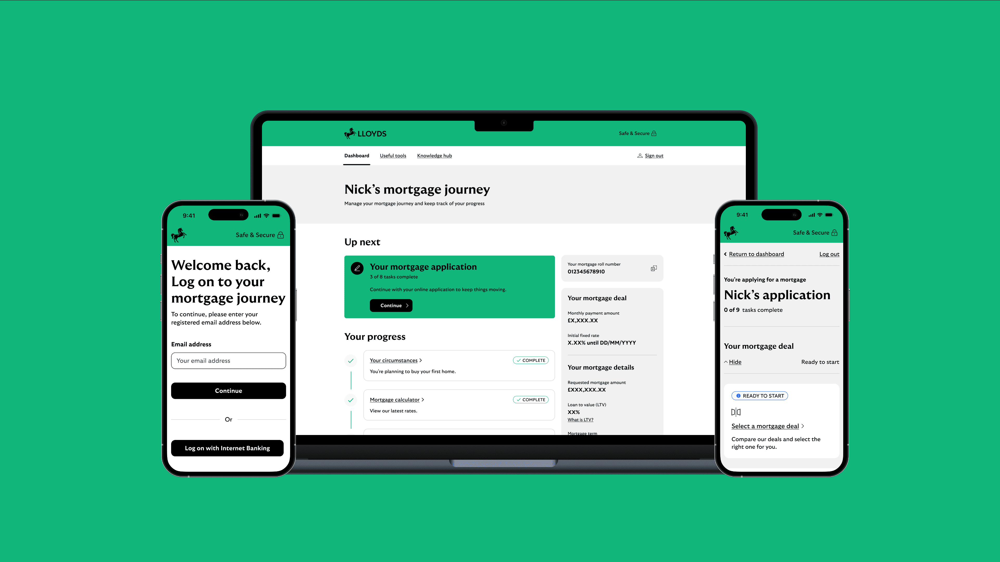
Lloyds Homes vision concept — speculative UI showing an integrated mortgage management experience across mobile and desktop, guiding customers from application through to completion.
Visual & UI concept integration
Worked with UI designers to integrate screens into the vision video, ensuring visual coherence and technical plausibility.
Synthesis & production
Co-led the production of the provocative 2030 vision video and strategic deck, ensuring version control and content accuracy across evolving concepts and UI integrations.
Stakeholder review & iteration
Participated in multiple feedback loops with leadership teams, audit teams, and Product/Tech stakeholders to refine the narrative and strengthen the strategic proposition.
My impact
Anchored the strategic vision
My work on the persona and scenario ensured the 2030 vision was cohesive, meaningful, and grounded in human-centric research.
Created cross-functional clarity
Provided the structure and narrative logic that enabled rapid, high-quality collaboration across diverse teams (Design, Product, Data, Applied Science).
Elevated the proposition
By integrating specific merchant-services and AI-driven workflows, I moved the concept beyond generic AI storytelling into a tangible business strategy.
Drove executive interest
The final assets were presented to ExCo and Group GenAI leadership, successfully generating heightened interest and follow-on strategic asks for the Design Futures team.
Outcome
The 2030 Vision video and supporting deck were produced and shared with ExCo and Group GenAI leadership as a provocation tool, shaping ideation for future Commercial AI capabilities.
The project successfully aligned disparate teams around a unified future narrative and established foundational principles that continue to guide product strategy discussions within Business & Commercial Banking.
Regenerated UX from vibe-coding
Customer–Relationship Manager interaction for AI SaaS vision — future business banking experience for mid-corporate customers.
Customer
Hannah's AI-enabled dashboard — customer-side view of the 2030 business banking experience, regenerated through vibe-coding from the original vision concepts.
Relationship Manager
Rob's relationship manager dashboard — colleague-side view showing how AI surfaces proactive insights and supports mid-corporate customer conversations in 2030.
Next Project
PayPoint Cash Deposit
Enabling customers to deposit cash at local shops—designing an inclusive service for vulnerable customers.
/ PayPoint Cash Deposit
PayPoint Cash Deposit
Designing an inclusive in-app service enabling Lloyds Banking Group customers to deposit cash at over 30,000 PayPoint locations — maintaining banking access for vulnerable customers while expanding the ways people can manage their money beyond traditional branches.
As Lloyds Banking Group evolved its branch strategy, the organisation needed to ensure customers — particularly those who rely on cash and face mobility or accessibility barriers — would have equal access to everyday banking services.
With 99.5% of people living within a mile of a PayPoint location, the opportunity was clear: design a service that lets customers deposit cash at familiar local shops, simply and securely, without needing a branch. The challenge was making that experience feel as trusted and reliable as the bank itself.
The challenge: design a service that enables customers to deposit cash at nearby retail locations (PayPoint-enabled shops) while maintaining trust, security, and the quality of experience customers expect from their bank.
"This journey would save me doing this... I could go down to a corner shop and pay it straight away. I think it's wonderful."
The delivered service — Deposit Cash screens live across Lloyds Bank, Halifax, and Bank of Scotland. Customers generate a barcode, take it to any PayPoint store, and see funds clear within two hours.
My role
I led service design and UX design across the full customer journey—from initial concept exploration through launch—ensuring the experience balanced business priorities with customer needs, particularly for vulnerable users.
Key responsibilities
✓ Journey mapping and wire-framing across three core user flows
✓ User research and content development with cross-functional teams
✓ Led Inclusive Design Panel sessions with lived-experience experts
✓ Stakeholder alignment across Product, Engineering, Business, and 3rd party (PayPoint)
✓ Defined MVP and MVP+ scope based on research insights and panel feedback
Process
Early concepting & UX definition (Mid 2024)
Facilitated and contributed to early UX definition and screen flows for the Deposit Cash journey. Created mock-ups and prototypes, conducting walkthroughs with stakeholders including product owners, researchers, content designers, and developers.
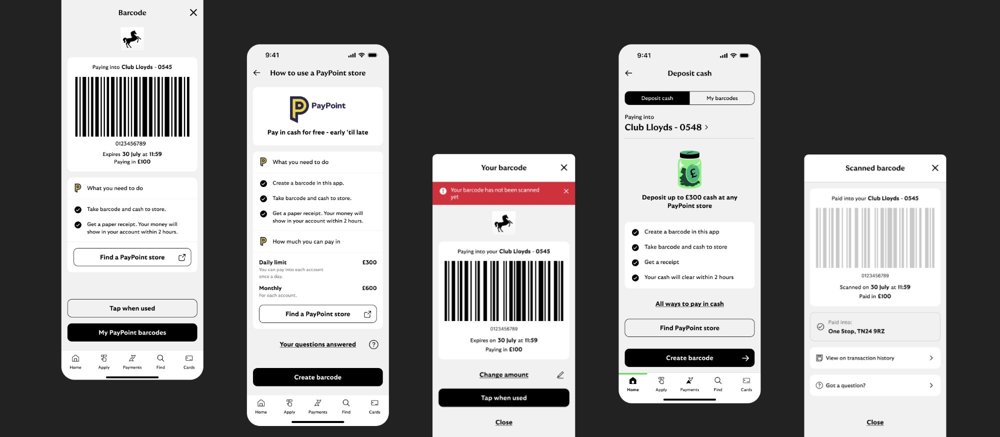
Early UX exploration board — iterating on barcode creation, management, and in-store deposit flows. Variants tested for discoverability, error states, and multi-account edge cases.
Journey mapping & constraint mapping
Mapped three critical user journeys to surface risks, edge cases, and design constraints before detailed solutioning:
1. Create a barcode for the first time
Explored how users create a barcode for the first time, identifying key considerations: entry points, in-store eligibility (PayPoint only), user education, and deposit limits.
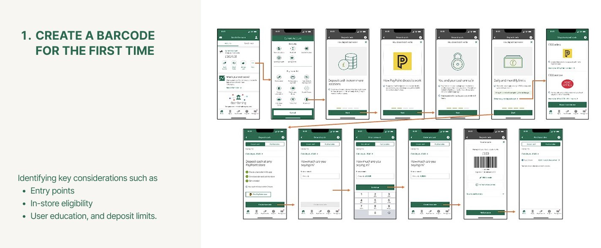
Journey 1: Create a barcode for the first time — full screen-by-screen flow mapping entry points, education screens, account selection, amount entry, and barcode generation.
2. Edit my barcode
Focused on when and why users need to edit a barcode, highlighting discoverability challenges and risks around unintended user actions.
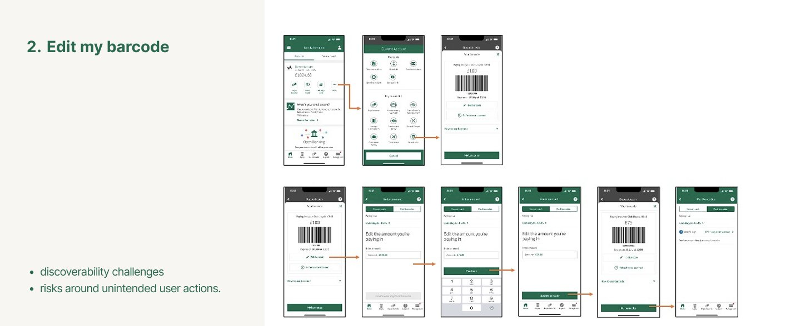
Journey 2: Edit my barcode — mapping how users discover and modify an existing barcode, surfacing discoverability risks and edge cases around unintended deletion or amount changes.
3. Scan my barcode and deposit
Examined the end-to-end in-shop experience, including customer–shopkeeper interactions and how confirmation and communication are handled after deposit.
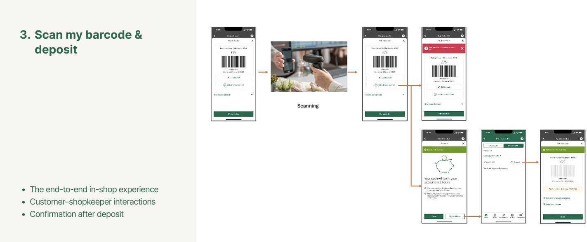
Journey 3: Scan & deposit in-store — end-to-end flow from showing the barcode to the shopkeeper, through scanning, to confirmation states and scanned barcode history in the app.
These early journey breakdowns helped surface user needs, constraints, and potential risks—clarifying user expectations and aligning teams on constraints before detailed design.
Workshop facilitation & Inclusive Design Panel
Ran and coordinated key design sessions, then submitted Deposit Cash to the Inclusive Design Panel—an internal programme subsidised by an external inclusive design audit institution. This enabled inclusive design integration across teams with strong validation from lived-experience experts and subject matter specialists.
End-to-end service design leadership
Synthesised user research results and Inclusive Design Panel findings, then influenced MVP and MVP+ scope decisions. Ensured design decisions were grounded in real user needs while navigating technical and business constraints.
Key considerations
The service design required balancing multiple stakeholder needs and technical constraints:
Third-party alignment
Maintaining a trusted bank relationship while using external retail partners (PayPoint shops). Users needed to feel confident depositing cash in a corner shop while retaining the security and trust of their banking relationship.
Multi-barcode logic
Designed a system that supports one active barcode per eligible account. This enables users with multiple accounts to generate and use separate barcodes in a single session—balancing flexibility with security constraints.
Risk mitigation
Addressed security concerns including potential money-mule activity. Designed safeguards and validation flows without creating friction for legitimate users—particularly vulnerable customers who rely on this service.
Impact & outcome
The PayPoint Cash Deposit service launched in August 2025 across Lloyds Bank, Halifax, and Bank of Scotland — making Lloyds the first major UK bank to offer in-app barcode cash deposits at over 30,000 locations nationwide. Customers can deposit up to £300 a day, with money appearing in their account within minutes, across 94% of PayPoint sites open seven days a week.
Design impact
The Inclusive Design Panel validation ensured the service met accessibility standards and addressed real user needs—particularly for vulnerable customers who would be most affected by branch closures.
By mapping journeys early and surfacing constraints before detailed design, we avoided costly rework and aligned cross-functional teams around a shared understanding of user needs, technical limitations, and business priorities.
Strategic contribution
This project demonstrated how service design can support business transformation (branch closure strategy) while maintaining—and even improving—customer access and experience, particularly for vulnerable populations.
Key screens from the final delivered experience — covering entry, education, barcode creation, active barcode management, and barcode history across the Lloyds Banking Group app suite.
Next Project
Business Card Payment Onboarding
Redesigning telephony sales journey—reducing call duration by 50% while improving colleague confidence.
/Redesigning the Merchant Onboarding Experience
Redesigning the Merchant Onboarding Experience
Cardnet is a joint venture between Lloyds Banking Group and Fiserv, offering merchants a comprehensive suite of card payment services — from physical terminals and virtual POS to e-commerce payment gateways.
Client Development Centre (CDC), Product, Engineering
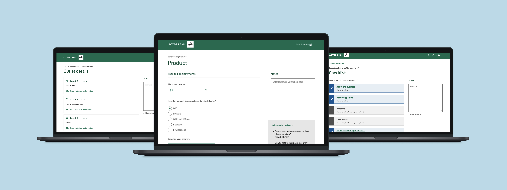
Scroll
The challenge
Less than 1 in 2 clients onboarded felt positive about their Cardnet experience. The telephony sales and onboarding journey was high-friction, overly scripted, and fragmented across disconnected tools—making it hard for colleagues to build rapport and impossible for customers to track what was happening.
<1 in 2
clients felt positive about their Cardnet onboarding experience
28 min
average call duration before redesign
What customers were saying
"Lots of information to absorb and your agent walked through it extremely fast."
"Administration overload. Too many instructions. Very disjointed — emails from no less than 8 different addresses over the course of 5 weeks."
The opportunity
How might we optimise the telephony sales experience with quick and easy wins for both customers and CDC colleagues? Three questions shaped our direction:
💬
How might we customise conversation flow based on customer needs?
🤝
How might we create better interactions with customers for higher onboarding rates?
⚡
How might we get to quote quicker for a smoother customer journey?
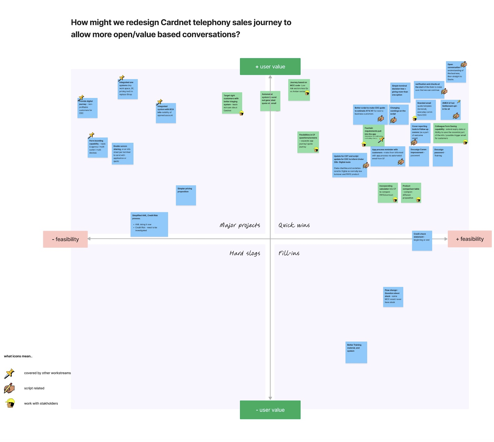
Opportunity mapping — plotting ideas across user value and feasibility axes to prioritise quick wins, major projects, and fill-ins for the Cardnet telephony sales redesign.
Process
Discovery — listening to real calls
I started by conducting call listening sessions and contextual inquiry in Leeds and Basildon with telephony colleagues, observing live calls and sales and mapping the as-is journey to surface where friction was really occurring — for both the colleague and the customer.
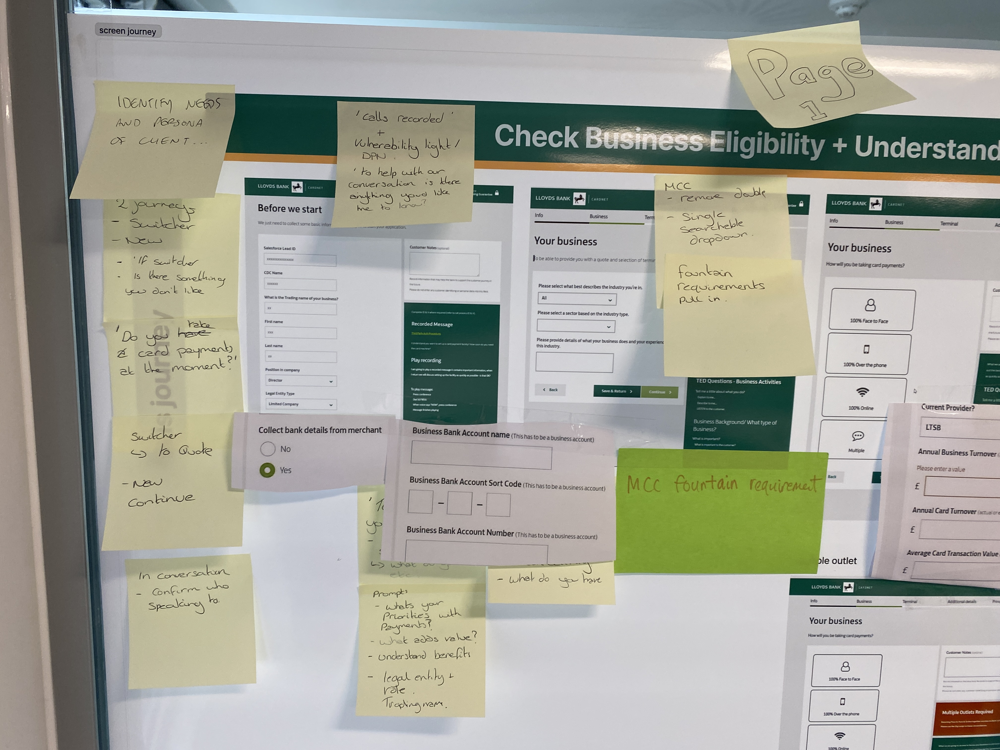
Deep-dive research — observing telephony colleagues in Leeds during live calls to map real friction points in the existing journey.
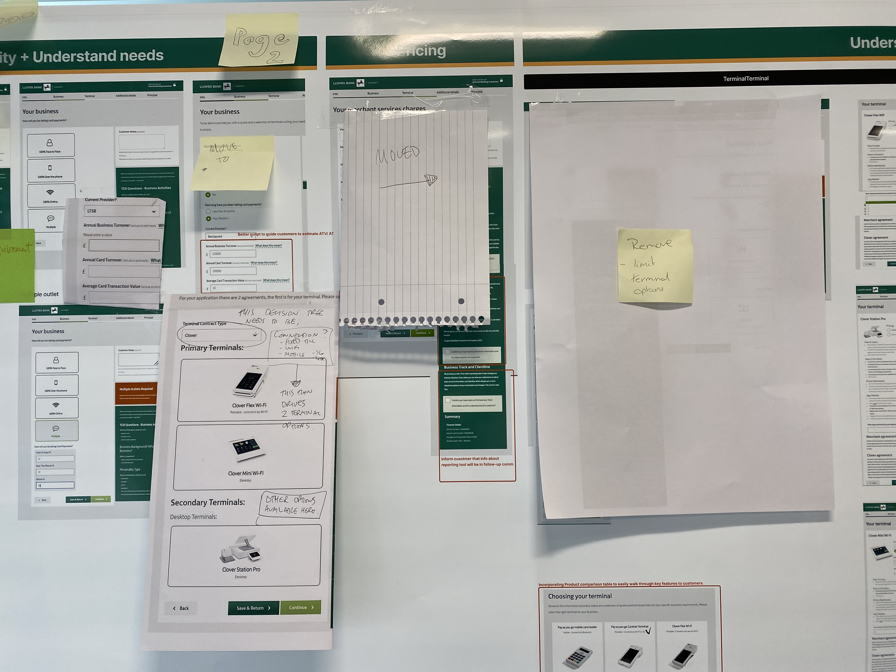
Prototype review on the wall — early screen flows annotated with colleague feedback during deep-dive sessions in Leeds.
Discovery workshops
I facilitated a series of co-creation and discovery workshops with telephony colleagues, stakeholders from operation and product, and cross-functional contributors. These sessions moved from mapping pain points to defining a shared north star and generating prioritised ideas.
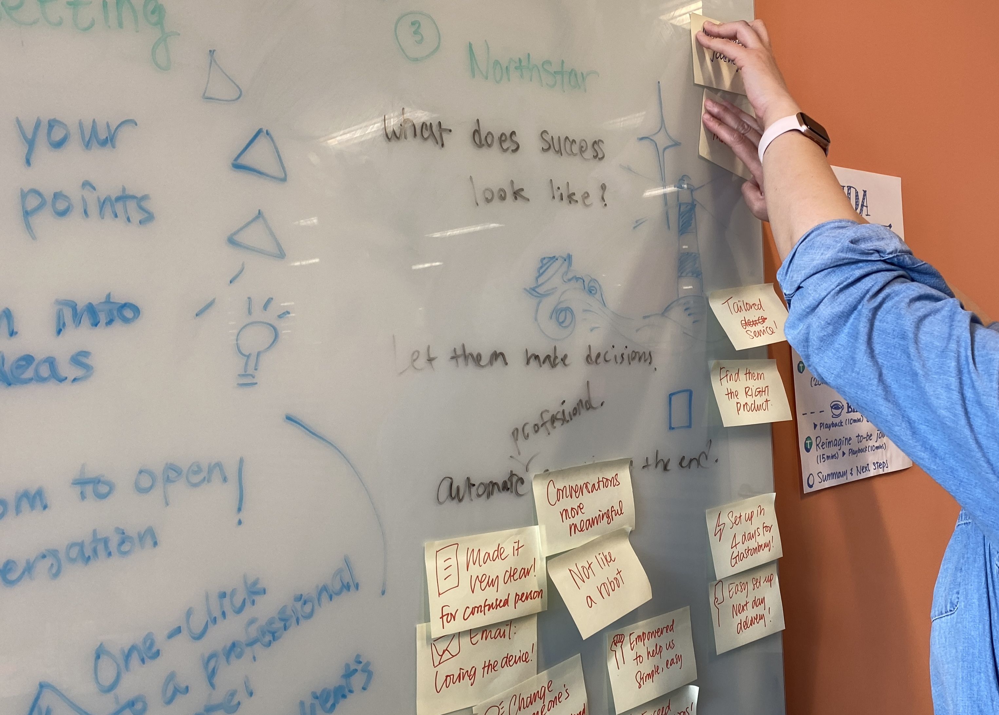
Discovery workshop — cross-functional team mapping the existing Cardnet telephony journey, identifying pain points across each stage.
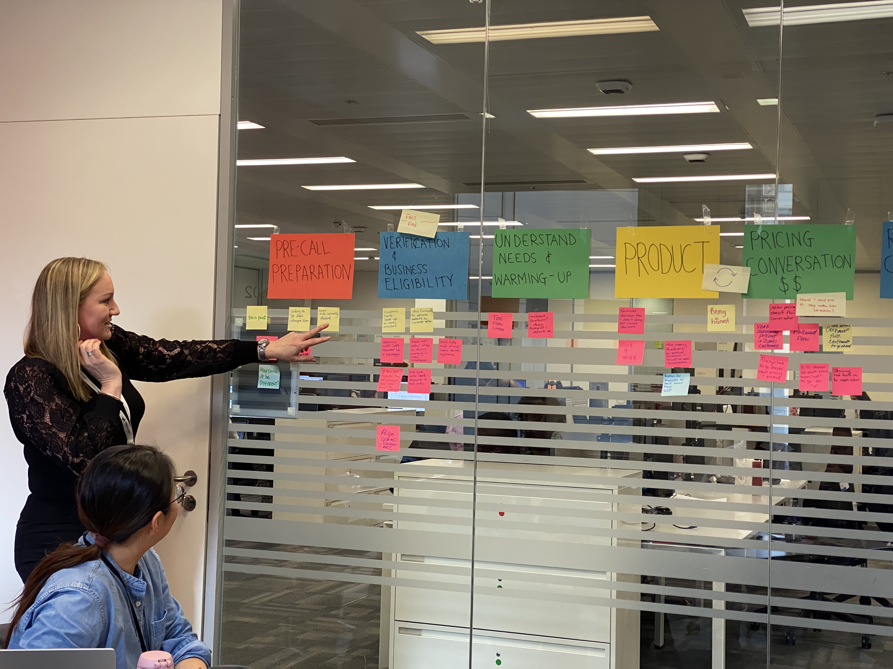
North star ideation — colleagues defining what success looks like for the redesigned journey: "not like a robot," "conversations more meaningful," "empowered to help us."
Journey stage mapping — organising the telephony flow into Pre-call Preparation, Verification, Understand Needs, Product, Pricing, and Follow-up stages.The cross-functional workshop team — bringing together telephony colleagues, design, product, and risk to align on the future journey.
"The breakthrough came from letting colleagues shape the script structure — they knew exactly where rigid compliance ordering broke natural rapport."
Co-creation & prototyping
Working closely with the CDC team, I co-created and iterated on the redesigned onboarding tool — integrating fragmented systems, simplifying the product decision tree, and building a templated quote email that colleagues could send directly from the tool. Prototypes were tested with both colleagues and customers in two rounds of user testing.
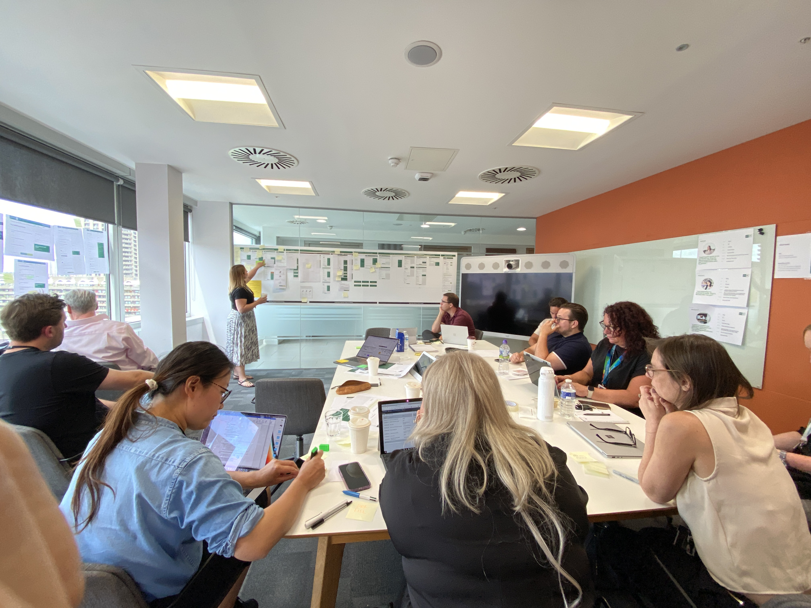
Co-creation session — CDC colleagues and the design team working together to shape the redesigned onboarding journey, screens, and conversation guides.
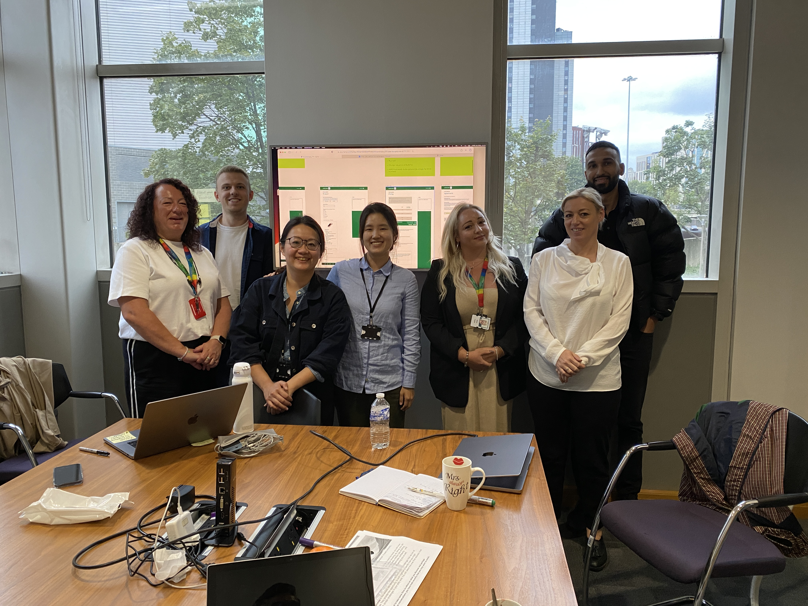
Second round of testing with sales colleagues — simulating a live onboarding call to validate the conversation flow end to end.
What we delivered
A redesigned end-to-end onboarding tool for colleagues, built around natural conversation rather than rigid compliance ordering — with every component validated by the people who would use it daily.
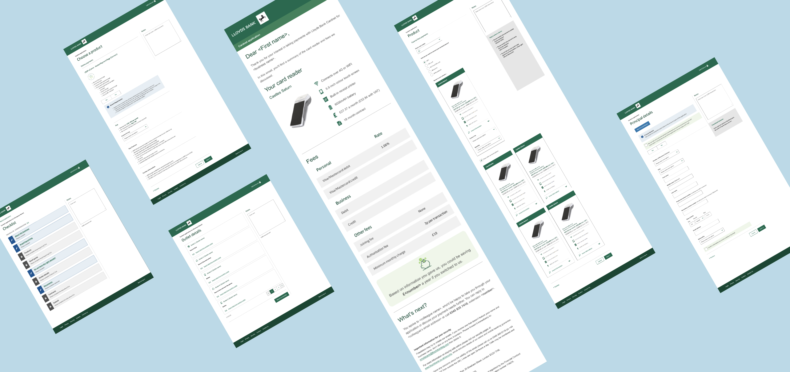
Key screens from the redesigned onboarding tool — from guided product selection and outlet details through to the integrated checklist, principal details form, eCommerce product view, and templated customer quote email.
Key deliverables
✓ Redesigned onboarding tool with integrated credit risk requirements (previously fragmented across tools)
✓ Templated customer quote email with embedded pricing matrix for consistent communication
✓ Simplified guided terminal decision tree replacing legacy product selection
✓ Updated conversation guides aligned to natural call flow
✓ Measurement framework tracking lead volume, sales conversion, and time spent
Impact
50%
Reduction in time to quote (5–10 mins saved)
30%
Reduction in time to complete application
5 of 12
Colleague touchpoints removed from the journey
Customer feedback
"I can see everything on one page! And there is the picture of the device too. It's good to have the rates there as I couldn't catch all of them while on the call."
"I like that I can get back to the same person — it's good to know he will be there to support and answer questions."
— Customer, user test feedback
Colleague feedback
"Showing this quote email to customers will make us more competitive, especially when other players can send a user-friendly quote — this would add to our credibility."
— Colleague, user test feedback
Reflection
This project reinforced that the best service design happens when you design with the people doing the work — not just for them. The telephony sales colleagues who interact with customers in daily basis knew exactly where the script broke down; my role was creating the space and structure for their expertise to shape the solution.
The challenge wasn't just redesigning a tool — it was redesigning human to human interaction. Moving from rigid compliance-first ordering to conversation-first design required building trust with risk and compliance teams, and demonstrating that natural conversation and regulatory requirements aren't mutually exclusive.
Back to all work
View all selected work
Return to the portfolio homepage to explore all case studies.
/ Ford Motor Company
Ford Motor Company — Future of Truck
Redefining archetypes for Ford's best-selling F-series trucks by identifying overlooked customer segments and translating deep human-centred research into strategic product roadmaps shaping the future of the F-150 and beyond.
As an Interaction Designer on Ford's Human Centred Design team at HQ in Dearborn, I worked at the intersection of research, strategy, and product design to shape the long-term direction of Ford's F-series truck lineup — America's best-selling vehicle.
My work spanned two interconnected streams: the Future of Truck 2035 strategic roadmap and the Human Centred Design for Product Cycle Assessment (P702 MCA) — a co-creation programme that ran across cross-functional teams to uncover product opportunities and align executive leadership around future customer needs.
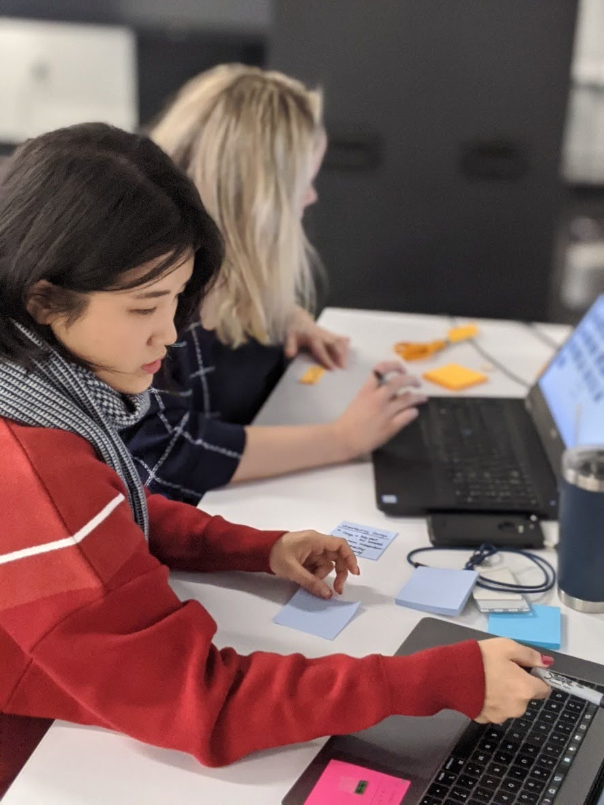
Workshop preparation — synthesising customer research and designing probes ahead of co-creation sessions with engineering, strategy, and design partners.
The challenge
Ford's F-series trucks had long dominated the US market, but legacy archetypes used to inform product decisions were failing to reflect the full range of real customers purchasing and using these vehicles. Segments like women truck buyers and Hispanic customers were systematically underrepresented in the design conversation — leaving significant opportunity on the table.
Key design challenges
Outdated archetypes: Existing customer models didn't capture emerging segments or evolving use patterns, creating blind spots in product strategy.
Fragmented cross-functional alignment: Design, engineering, and strategy teams operated with different assumptions about who the customer was and what they needed.
Bridging research to executive decisions: Translating nuanced human-centred insights into artefacts that resonated with senior leadership required both design rigour and strategic communication.
Future-state uncertainty: Designing for 2035 meant working with speculative scenarios — defining not just who the customer is today, but who they will become.
Research foundation
Before shaping future visions, the team needed a shared foundation. I collaborated with a researcher to create a comprehensive research map tracing the cultural, technological, and market evolution of North American trucks from the post-war era through to 2020.
This artefact synthesised historic signals across vehicle culture, automotive technology, generational population shifts, and competitive landscape — giving the team a single reference point to inform future inspiration and hypothesis development.
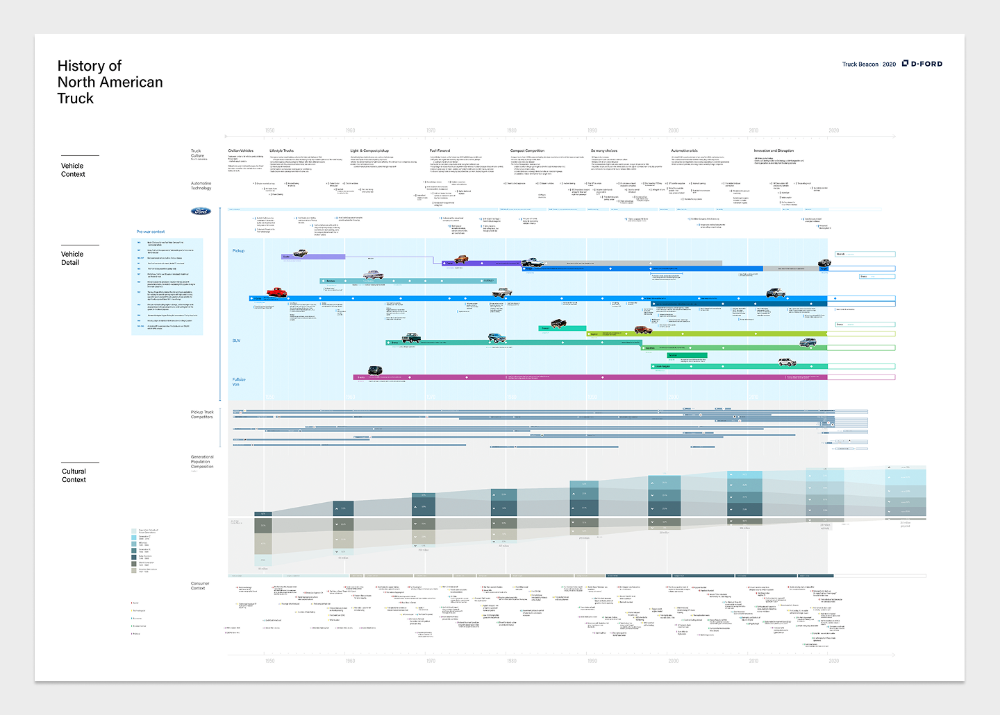
History of North American Truck (2020) — a research map co-created with a researcher, synthesising signals across vehicle culture, automotive technology, generational shifts, and the competitive landscape to ground future product strategy.
Process
Co-creation workshops
I ran and participated in co-creation workshops with cross-functional teams — bringing together design, strategy, engineering, and research partners to collectively surface product opportunities and customer insight gaps. Sessions moved from immersion into hypotheses, future context modelling, and customer needs refinement.
P702 MCA Co-Creation Process (2020) — a timeline visualisation mapping the full co-creation arc: from History of Choice Making and hypothesis development, through Future Context and Customer Needs, to Storytelling and concept synthesis with cross-functional teams.
Designing diary study probes
To inform future-state design with real user behaviour, I synthesised previous research and designed custom probes for diary studies — helping the team gather rich contextual data about how diverse customers actually lived with and used their trucks day to day.
Archetype redefinition
Working across Future of Truck 2035 and the P702 MCA programme, I helped redefine legacy archetypes to better represent the full spectrum of F-series customers — with particular focus on segments that had been historically overlooked, including women and Hispanic truck buyers.
"The most valuable archetypes aren't the ones that describe who's already at the table — they're the ones that reveal who's been missing from it."
Storyboard series for leadership alignment
To translate product strategy and technical feasibility into a shared vision, I contributed to a collaborative storyboard series — co-created with design, strategy, and engineering partners. Each storyboard brought an archetype to life through a full day-in-the-life narrative, making abstract customer needs tangible for senior decision-makers.
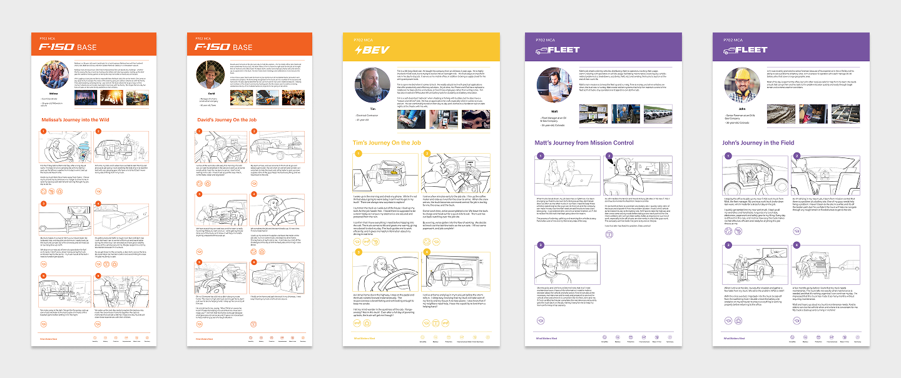
Vision storyboard poster series (2020) — defining new product archetypes (F-150 BASE, BEV, and FLEET variants) through day-in-the-life narratives for Melissa, David, Tim, Matt, and John. Co-created with design, strategy, and engineering to align leadership around diverse customer realities.
My impact
2035
Strategic roadmap horizon shaped for F-series product line
5+
New archetypes defined including overlooked women and Hispanic segments
ExCo
Storyboards presented to senior leadership, boosting design team visibility
Future of Truck 2035
Shaped strategic roadmaps for Ford's top products by redefining archetypes and highlighting overlooked segments. Led concept workshops, leveraged user research, and designed probes for diary studies to inform future-state product design.
Human Centred Design for Product Cycle Assessment
Ran co-creation workshops to identify resource gaps and shape future products, aligning outputs with prior research. Created personas and storyboards that resonated with senior leadership — boosting the design team's visibility and cross-functional collaboration across engineering, strategy, and product.
Reflection
This project taught me that the most impactful design work often happens before a single pixel is drawn. Reshaping the archetypes that inform a product's entire direction — and ensuring those archetypes reflect the full reality of who uses and buys that product — is a form of design that ripples through every downstream decision.
Acting as a strategic bridge between deep user research and executive-level product roadmaps required translating nuance without losing it. The storyboard series became a key vehicle for that — making human stories legible to people who think in strategy, feasibility, and market positioning.
Back to all work
View all selected work
Return to the portfolio homepage to explore all case studies.
/ <unspace>
<unspace> — Audio-spatial platform for community memory
A physical-digital platform for local communities to preserve and share their stories through sensory, audio-spatial experience — built with residents of Hackney Wick as a tool for resilience in the face of rapid gentrification.
2021
Context
Final Project, Interactive Architecture Lab, The Bartlett School of Architecture, UCL
Role
Design Researcher, Interaction Designer
Team
Jee Eun Lee, Laure Barthelemy, Sofia Kovalenko
Tools
Unity, Kinect
Scroll
Project intro - Audio-spatial platform for community memory
Research question
Community resilience through an interconnected platform of memories in time and space: how do we build a new sense of community and resilience in a socio-ecological system?
<unspace> is a platform for local communities to preserve and share their stories and memories in time and space. A community-oriented felt archive, it foregrounds the sensorial, exploratory feel of memory — letting users navigate a community's history through physical experience rather than passive documentation.
The platform combines a physical interactive installation — composed of materials drawn from the locality's own history — with an audio-scape built from interviews conducted with community members. A companion digital platform documents the growing archive and makes it accessible beyond the physical space, with the long-term ambition of expanding to communities globally.
Phase 1 — Community outreach
Hackney Wick: a community under pressure
Our first collaborator was Hackney Wick — a community in East London endangered by gentrification and ongoing redevelopment. We began by conducting a series of interviews with local residents to understand how the neighbourhood operated, what its history felt like from the inside, and what its people needed.
The network of residents and places we encountered was remarkable. From interactions both on and off the record, <unspace> took shape not just as a tool for sharing stories with the world, but as a space for residents to engage in the healing process of remembering in the face of rapid change.
Community interview — engaging with Hackney Wick residents on site to understand how the neighbourhood operates and what it means to its people.
White Walls exhibit — first public showing
The White Walls exhibit is an initiative by inhabitants of the ex-warehouse unit Oslo House — a bi-monthly showcase of local artists in their hallway. One of our interviewees invited us to participate in August 2021. For this occasion, we created and presented a documentary video of our research and interview footage — the first time <unspace> was presented to the Hackney Wick public. Content shared online generated wider community interest in the project.
White Walls exhibit — the first public showing of <unspace> to the Hackney Wick community, presented at Oslo House in August 2021.
Phase 2 — Materiality & soundscape
Sensory experience
In the first prototype, the team used physical materials as a sensorial and visual medium — creating connections between the physical and virtual memories of the community. Materials referenced both the industrial past of Hackney Wick and Fish Island (peanuts, rubber, silk) and the ever-present textures of the area today (soil, sand, gravel, bricks, pebbles from Hackney Marshes and the canal-side). The contrast of textures and temperatures was intentional — evoking a range of sensations for people to navigate while listening to the audio-scape.
Sensory materials & first platform
Material palette — soil, sand, gravel, pebbles, and peanuts arranged across the platform surface
Visitor navigating the material platform barefoot while listening to the audio-scape
Motion tracking — camera feeds mapped to Unity for real-time position detection
Peanut shell texture — referencing the industrial past of Hackney Wick and Fish Island
Pebbles from Hackney Marshes and the canal-side — evoking the textures of the neighbourhood
First platform prototype — material sensory experience in action.
Motion tracking — first iteration
The first tracking setup used two cameras to register movement from different angles, mapping frame-by-frame differences to detect motion across the platform. While functional, this approach produced a vague and imprecise response — contingent on full-body movement rather than intentional directional input. This limitation drove the next iteration.
In response, the team switched to tracking head movements and directional angles as the mechanism for navigating the audio-scape. This shift produced more accurate, responsive feedback — creating a more intuitive relationship between body orientation and sound.
Following the White Post installation, <unspace> was presented at Ars Electronica — one of the world's leading festivals for art, technology, and society — extending the project's reach to an international audience and opening conversations around community memory as a global design practice.
The next phase focused on producing an architectural-scale modular platform that could be transported, assembled, and reproduced by other communities. Individual box units were designed from dismantleable pieces joined by wood connectors, with carrier bags that communities could fill with their own local and historical materials. The modularity was central to the concept: <unspace> is not a fixed installation but a transferable process and tool.
Making & process
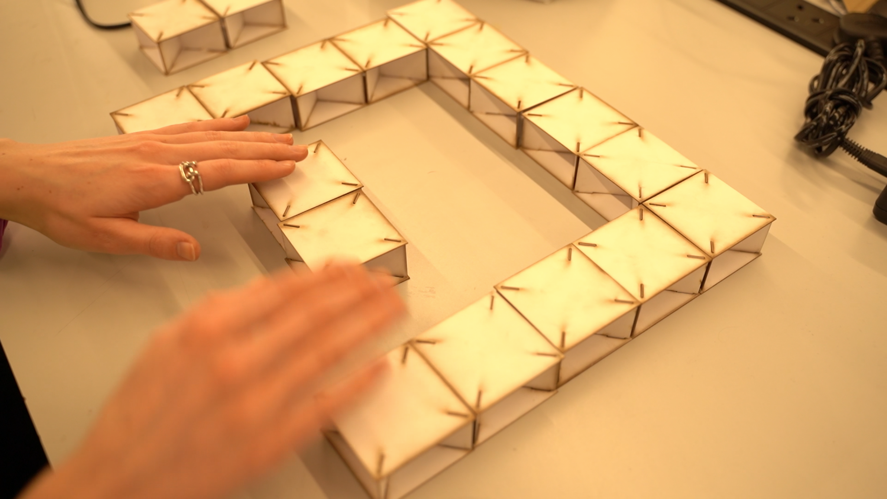
Scale model — modular unit system
Platform construction — plywood modules with wood connectors
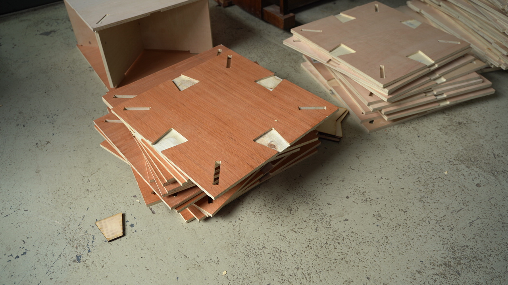
Assembled modular platform ready for installation
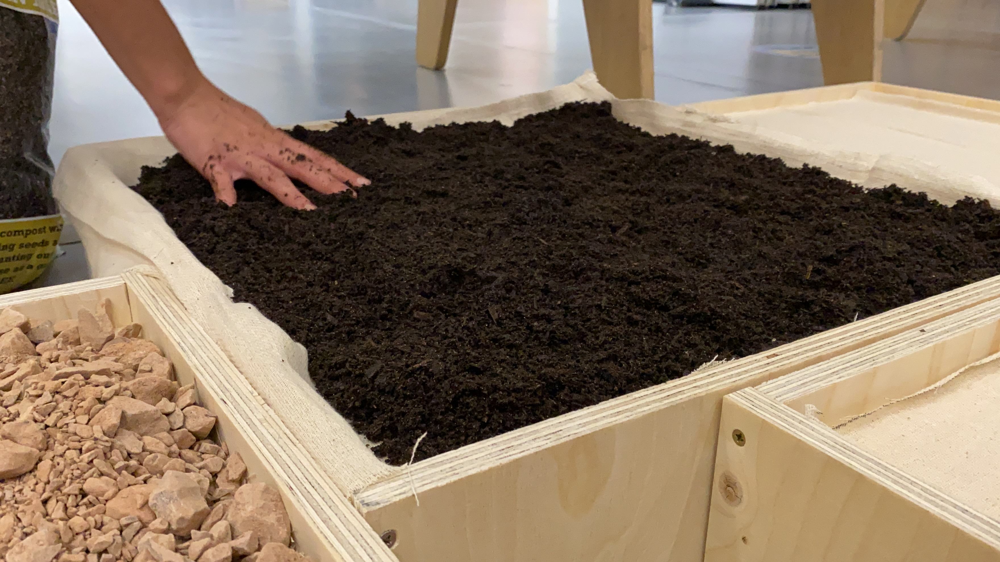
Felt archive — material memory
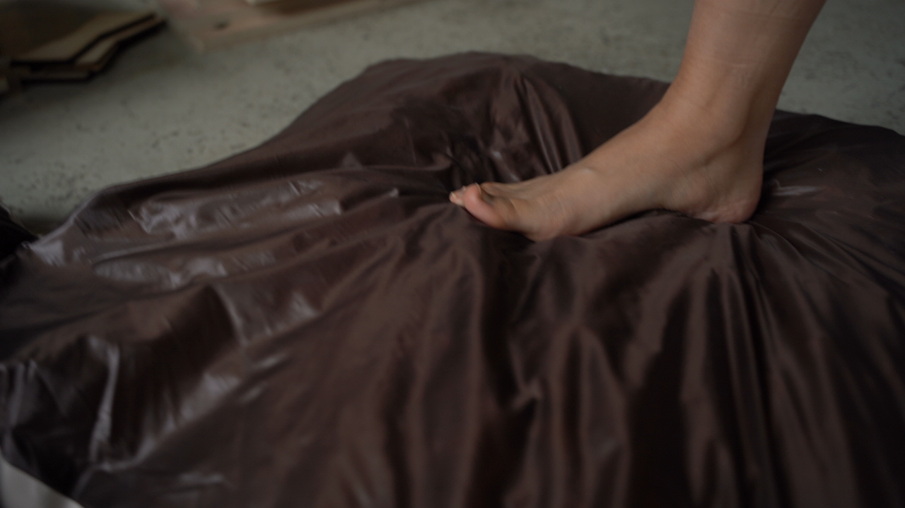
Material iteration — from exposed to hidden materials
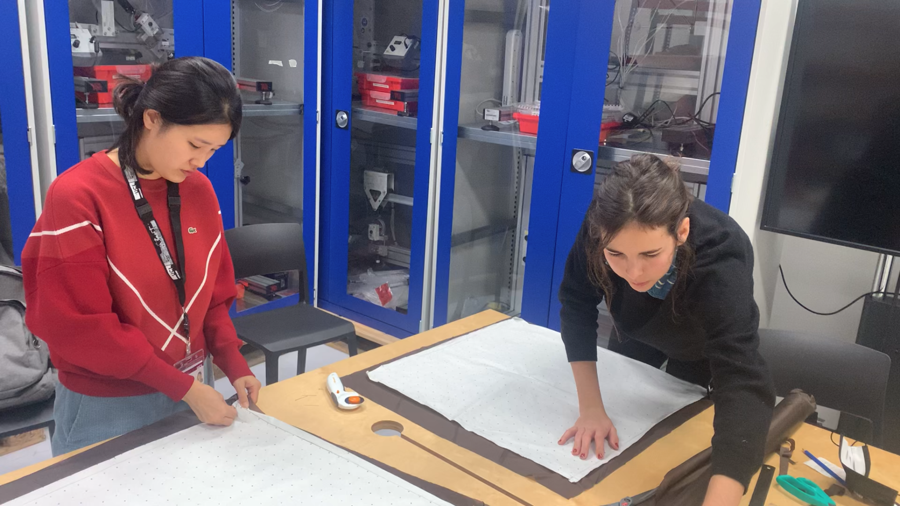
Pattern-making — technical fabric cover
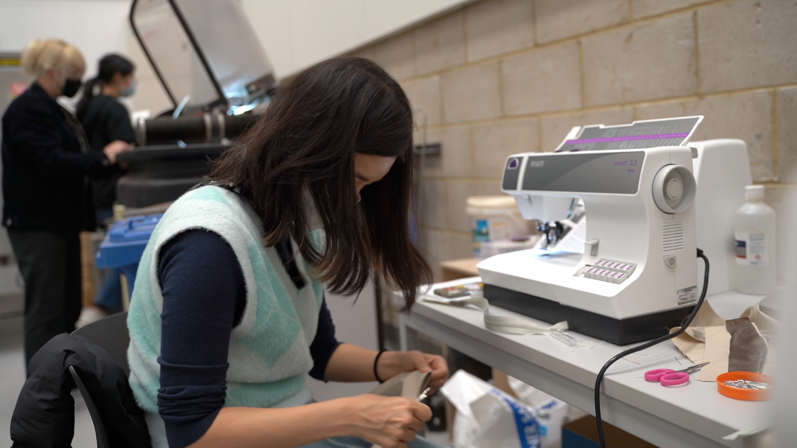
Fabrication in the workshop
Final installation — White Post, Hackney Wick (Nov 2021)
The final installation introduced two key experiential refinements. First, materials were hidden beneath a thin technical fabric — preserving high sensory sensation while removing the visual prompts that had caused visitors to navigate consciously rather than exploratorily. Second, the team switched to Kinect-based tracking, focusing on head position and directional movement. Audio sources were placed at varying heights in the Unity world, encouraging visitors to sit, crouch, and lie down on the platform surface in search of sounds — transforming the body into an active instrument of exploration.
Exhibition — White Post, Hackney Wick
Exhibition night — White Post, Hackney Wick (Nov 2021)
Visitor navigating the audio-scape with headphones
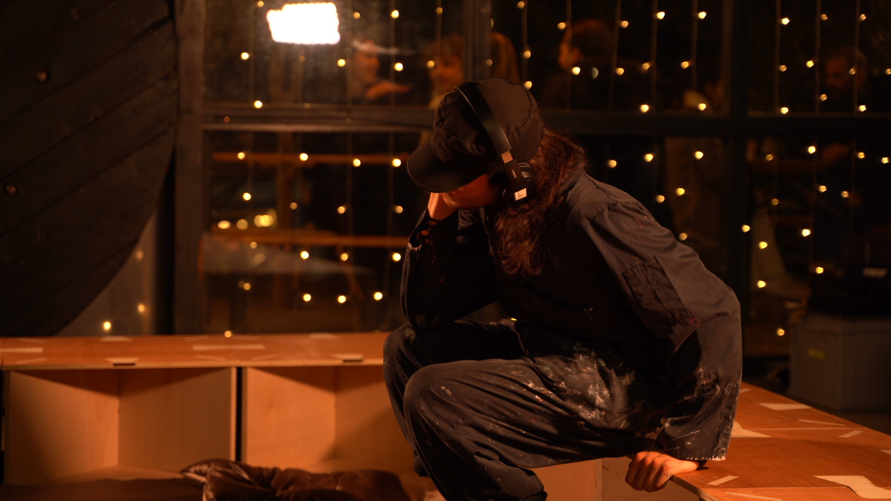
Visitor experiencing the installtaion 2
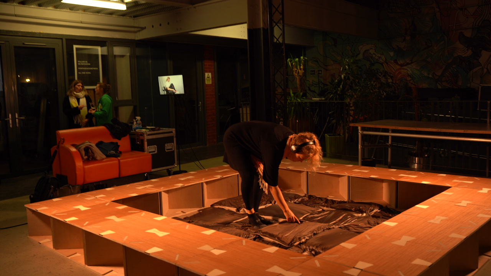
Audience interacting with the installation
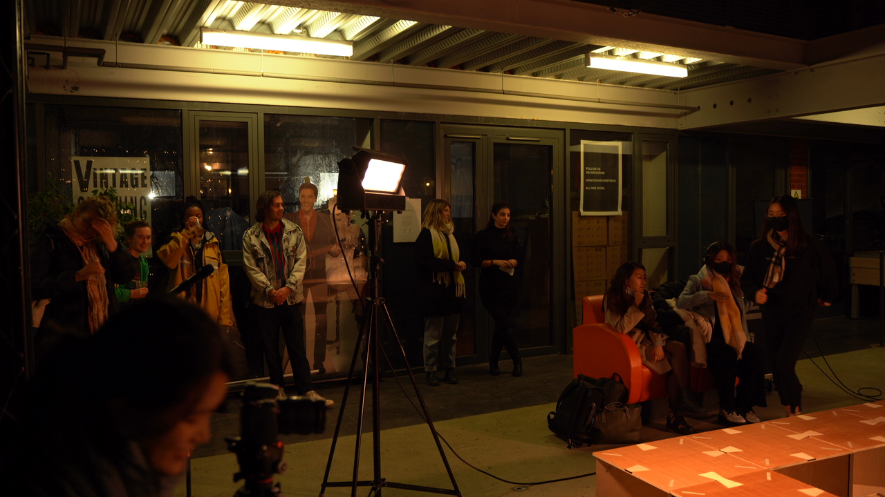
Audience gathered during performance
Thesis
The project was grounded in a broader academic enquiry: how do communities build resilience through shared memory in the face of ecological and social change? The thesis positioned <unspace> as a mechanism for local–global interaction — a way to reconcile threatened communities and individuals through interconnected memory rather than static preservation.
Key proposition
Resilience is not a fixed state but a continuous process of adaptation. As the sense of community shifts under pressure from gentrification, displacement, and environmental change, <unspace> offers an alternative framework: bridging memories not just within a single locality, but across communities — seeding a coalition built on interconnectedness.
Documentation
End-to-end project documentation, covering research, making, and exhibition — including the project brief.
Watch on YouTube ↗Website build and design — promoting and archiving the Hackney Wick community as <unspace>'s first project.
Seed project
<In Dust> — where <unspace> began
<unspace> grew directly out of <In Dust> — a VR memory-scape developed at the Interactive Architecture Lab, The Bartlett, UCL in 2021. <In Dust> explored reconstructive memory across past, present and future using dust as metaphor, collecting stories from 28 individuals during lockdown. The sensorial concept of a navigable memory-scape carried forward into <unspace> as a physical, community-rooted platform.
View <In Dust> case study →
Reflection
This project shaped how I think about design's relationship to place and community. Working directly with Hackney Wick residents meant that every design decision — what materials to use, how to track movement, how to present the archive — had to earn its place in relation to real people and a real neighbourhood in flux.
The iterative process of refining the physical and technical experience reinforced something I carry into all my work: good interaction design is felt before it is understood. The most meaningful shift in the project wasn't a technical one — it was the decision to hide the materials, remove the visual logic, and trust the body to find its own way through.
Next Project
Ford Motor Company — Future of Truck
Redefining archetypes for Ford's best-selling F-series trucks through co-creation and human-centred research.
/ <In Dust>
<In Dust> — Virtual memory-scape VR experience
<In Dust> is a virtual memory-scape using dust as the guiding metaphor for our relationship with the planet and with each other — an experimentation of people's reconstructive memory in past, present and future, built from stories collected from 28 individuals.
2021
Context
Interactive Architecture Lab, The Bartlett School of Architecture, UCL
Team
Jee Eun Lee, Sofia Kovalenko, Laure Barthélemy
Tools
Cinema4D, Unity
Scroll
Overview
<In Dust> is a virtual reality world made up of swirling dust clouds, each containing an audio memory that the user could pass through and listen to. Concentrating on the idea of dust as a constantly growing individual story unit, the team created an immersive space where memory is navigated through the body rather than read or watched.
The project collected stories and memories from 28 individuals, exploring people's reconstructive memory across different times — past, present and future. It was developed at the Interactive Architecture Lab, The Bartlett, UCL in 2021.
Story
The team began experimentation during lockdown, exploring the possibility of using the virtual world as a global connector between different localities and experiences. At the time, they were based in London, Moscow and New York — a separation which dictated the use of the virtual medium.
Concentrating on the idea of dust as a constantly growing individual story unit, the team created a virtual reality world made up of swirling dust clouds. Each cloud contained an audio memory that the user could pass through and listen to. The metaphor of dust — ever-present, invisible, connecting everything — became the core language for how personal memory circulates between people, places and times.
Film
<In Dust> — project film, 2021. A virtual memory-scape navigated through swirling dust clouds, each containing an audio story from one of 28 participants.
Seed of <unspace>
<In Dust> was the direct precursor to <unspace>. The core concept — a navigable memory-scape where stories are encountered through physical presence and movement rather than passive viewing — carried forward into <unspace> as a physical, community-rooted platform.
Where <In Dust> operated in the virtual realm during a moment of enforced global separation, <unspace> brought that same sensorial logic back into the physical world — grounding it in a specific community, a specific place, and materials drawn from the land itself.
Continue to <unspace>
The sensorial platform <unspace> developed directly from <In Dust> — maintaining the concept of memory-scape in shared time and space, and bringing it into the physical world with Hackney Wick residents.
View <unspace> case study →
From seed to platform
<unspace> — Audio-spatial platform for community memory
The physical evolution of <In Dust> — developed with Hackney Wick residents as a tool for community resilience.
/ Microsoft Research
Microsoft Research — Inclusive Futures in AI & Mixed Reality
Two independent research projects at Microsoft Research Cambridge exploring the ethical and experiential foundations of inclusive AI — from avatar authenticity in spatial computing to human-AI interaction design for Blind and Low-Vision users.
Research Lead & Strategist · Research & Co-Design Facilitator
Collaborators
ML Researchers, Engineers, Design Researchers, BLV Community
Scroll
This case study is written in a reflective, blog-style format due to NDA and copyright restrictions with Microsoft Research. Detailed artefacts, screens, and internal materials cannot be shared.
Project 01
Human-AI Interaction for Find My Things
Research & Co-Design Facilitator · Cross-functional with ML Researchers & Engineers
The challenge
Assistive AI tools can often provide feedback that is too dense or poorly timed, leading to cognitive overload for Blind and Low-Vision (BLV) users. Working alongside a specialised team of Machine Learning researchers and engineers, the goal was to research how AI-driven object recognition could be communicated through intuitive, non-visual interaction patterns.
Co-design process
I served as a bridge between the BLV community and the technical research team — facilitating a specialised co-design series to ensure user-identified needs were accurately captured for engineers to address.
Workshop execution
Supported the facilitation of three intensive workshops with 10+ participants from the BLV community. Sessions focused on uncovering how users naturally want to "handshake" with an AI system — exploring the balance between speed, certainty, and sensory feedback.
Research synthesis
Synthesised high-level qualitative data from workshops into actionable patterns for the technical team:
Key interaction principles defined
Auditory Hierarchy: Spatial orientation (direction and proximity) must be prioritised over verbal description — users need to know where before what.
Interaction Optimisation: Identified the specific cues users required to feel in control during search — helping the team understand how the AI should communicate its confidence levels.
Scalable Accessibility Patterns: Defined non-visual interaction patterns (audio and haptic) designed to reduce cognitive load for power users of assistive tools.
Outcome
This foundational research was instrumental in the development of the "Find My Things" feature within the Seeing AI ecosystem. By centering the expertise of the BLV community and collaborating across technical disciplines, the research helped move the feature from a technical concept to a functional, human-centric assistive tool.
Research Lead & Strategist · 4-Month Research Project
The challenge
In spatial computing, avatars often rely on standardised motion libraries that fail to represent the diverse physicalities of people with disabilities. This creates a "digital uncanny valley" where a user's virtual representation does not align with their lived physical identity — leading to exclusion in social Mixed Reality environments.
Core question
How do people with disabilities in Mixed Reality want to perform their avatar's bodily movements to support communication?
Methodology
Decoding Movement Authenticity — in collaboration with lived experts from the creative industry
Over four months, I led a deep-dive discovery phase to bridge the gap between human expression and technical architecture. I facilitated collaborative sessions and interviews with movement specialists, choreographers, and performance artists — experts with a professional vocabulary for non-verbal communication that technical teams typically lack.
Critical insight — Movement Authenticity
Authenticity in a digital space is not about "perfect" or "smoothed" motion. Through expert interviews, we defined Movement Authenticity as a qualitative result of how an individual's intent and physical presence are translated into a digital medium.
By working with artists with extensive experience of physical disabilities, we identified Signature Movements — the unique ways individuals occupy space and express identity through motion.
Key deliverables
The Inclusive Research Handbook
A comprehensive strategic guide for engineers and designers, synthesising artistic and qualitative insights into a formal Taxonomy of Inclusive Movement. This provided a framework for future ML data collection and model generation — translating human experience into technical requirements.
Vision Videos
Conceptual storytelling assets demonstrating the potential of an "authenticity-first" approach to avatar design. These artefacts were produced to align product teams and senior leadership around a more inclusive vision for the future of Mixed Reality.
Goal
To define the foundational "ground truth" required to inform the ethical development of future machine-learning-generated avatars — ensuring that disabled users can be represented with integrity in spatial computing environments.
Reflection
My time at Microsoft Research deepened my conviction that the most meaningful AI design work happens at the intersection of technical rigour and lived human experience. Both projects required me to act as a translator — between artists and engineers, between BLV users and ML researchers — synthesising qualitative truth into frameworks that technical teams could build from.
The ability to define "ground truth" in human terms, and then make that legible to a system, is something I carry into every AI-adjacent project I work on today.
Next Project
Ford Motor Company — Future of Truck
Redefining archetypes for Ford's best-selling F-series trucks through co-creation and human-centred research.